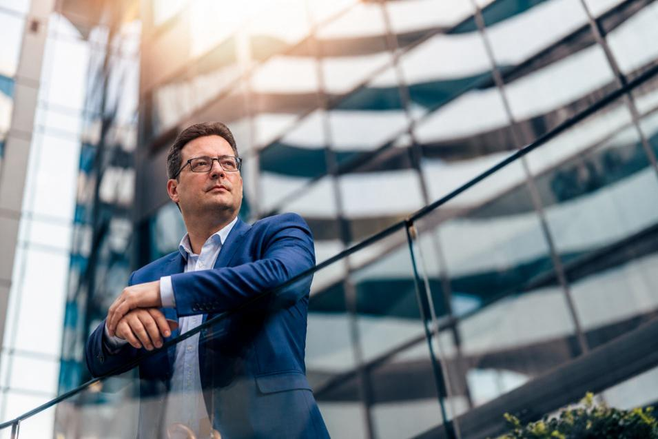

Patrick
Autor
Ich reise gerne, probiere neues Essen und entdecke
besondere Orte. Hier erzähle ich von meinen
persönlichen Erlebnissen am Gardasee.
Meine Reise zum Gardasee war vor allem entspannt. Ich
wollte nicht jeden Tag einen festen Plan abarbeiten,
sondern die Atmosphäre genießen, gutes Essen probieren
und die Umgebung in Ruhe entdecken.
Besonders gut haben mir Sirmione, die Restaurants und
die kleinen Erlebnisse gefallen, mit denen ich vorher
überhaupt nicht gerechnet hatte.
Entspannen in Sirmione
In Sirmione habe ich viel Zeit damit verbracht, einfach
zu entspannen. Der Ort liegt direkt am Gardasee und hat
eine besondere Atmosphäre. Man kann dort durch die
Straßen gehen, am Wasser sitzen oder sich ohne Stress
umsehen.
Mir hat gefallen, dass ich dort nicht ständig etwas
unternehmen musste. Ich konnte die Aussicht genießen,
durch den Ort laufen und zwischendurch einfach chillen.
Fischgerichte am Gardasee
Natürlich gehörte auch das Essen zu meiner Reise. In den
Restaurants habe ich besonders gerne Fischgerichte
gegessen. Die Kombination aus frischem Fisch,
italienischen Gewürzen und der Aussicht auf den See
hat mir sehr gefallen.
Für mich war das gemeinsame Essen ein wichtiger Teil
der Reise. Nach einem entspannten Tag konnte ich mich
hinsetzen, etwas Neues probieren und den Abend in Ruhe
genießen.
Pistazien-Croissants auf der Messe
Ein besonderes Erlebnis war der Besuch einer Messe.
Dort gab es viele verschiedene Stände und natürlich
auch einiges zu essen.
Besonders gut waren die Pistazien-Croissants. Sie waren
frisch, süß und mit einer leckeren Pistaziencreme
gefüllt. Damit hatte ich vorher nicht gerechnet und sie
gehörten definitiv zu meinen kulinarischen Highlights.
Kleine Echsen und frische Zitronen
Am Gardasee habe ich auch viele kleine Echsen gesehen.
Sie saßen auf warmen Steinen oder verschwanden schnell
zwischen den Pflanzen, sobald man ihnen näher kam.
Ein weiteres schönes Erlebnis war, frische Zitronen
direkt vom Strauch zu pflücken. Die Zitronen rochen viel
intensiver als die, die man normalerweise im Supermarkt
findet.
Gerade diese kleinen Erlebnisse haben die Reise für mich
besonders gemacht. Es waren nicht nur die bekannten
Sehenswürdigkeiten, sondern auch die Tiere, Pflanzen
und überraschenden Momente.
Mein Fazit
Meine Reise zum Gardasee war entspannt, abwechslungsreich
und voller leckerer Erlebnisse. Sirmione, die Fischgerichte,
die Pistazien-Croissants und die frischen Zitronen sind
mir besonders in Erinnerung geblieben.
Ich würde den Gardasee allen empfehlen, die italienisches
Essen, schöne Landschaften und entspannte Tage am Wasser
mögen.